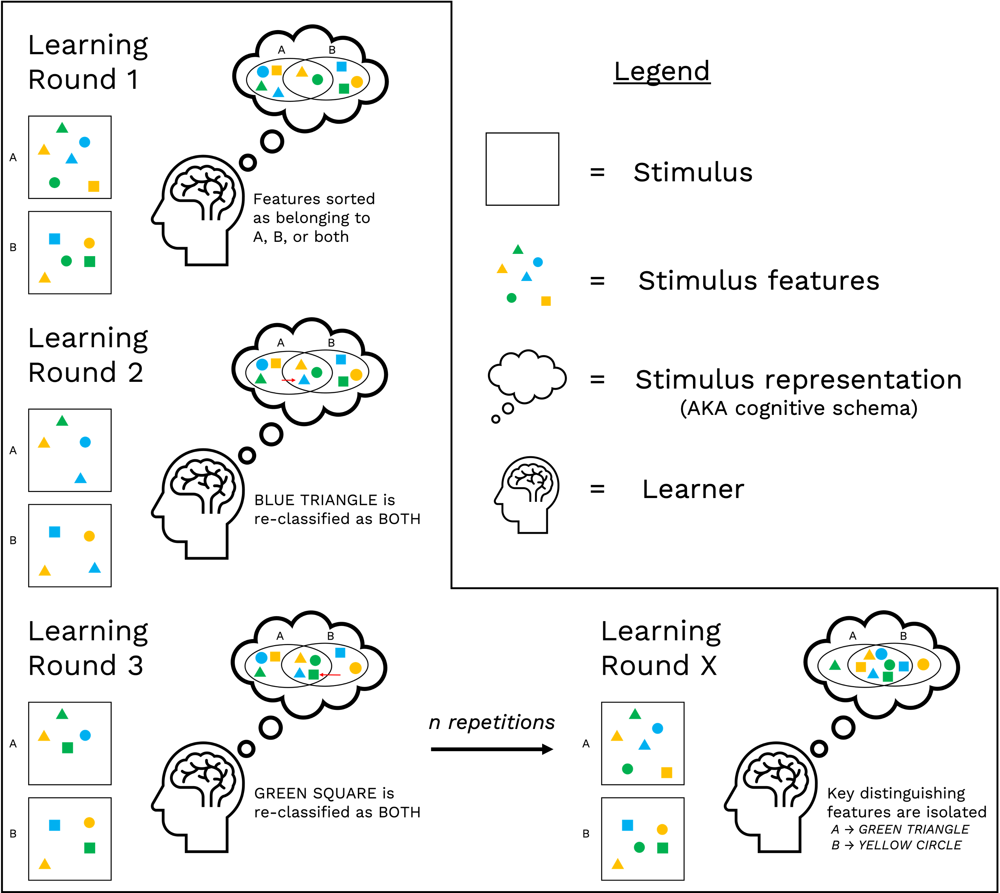
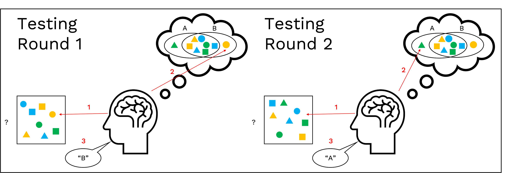
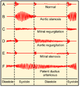
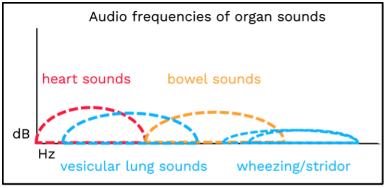

Wearable sensory modifiers for better recognition learning
Christopher Romano
Feinberg School of Medicine
Northwestern University Chicago IL USA
chris.romano@northwestern.edu
Nabil Alshurafa
Feinberg School of Medicine
Northwestern University Chicago IL USA
nabil@northwestern.edu
Many skills depend on recognition of specific features within raw streams of sensory input. In humans, feature detection (1) requires ordered cortical processing of sensory input and (2) improves with repetition. For most individuals, practice is the sole barrier to acquiring a stimulus-discrimination skill. However, individuals with disordered sensory processing often struggle to deeply cognize features when first encountering them, thereby impairing the development of robust mental schemata and limiting the benefit of additional practice. Such processing deficiencies, including those that do not meet clinical thresholds, constitute a disparity in the learning outcomes of students and/or trainees whose educational program involves developing feature recognition skills. Likening the predicament of such students to problems of machine learning provides a feasible approach to closing this disparity and a potential improvement to educational technologies in general. This paper presents the design of a wearable system that addresses a specific learning example (nursing and medical students learning to auscultate heart, lung, and bowel sounds) and proposes a general framework for the design of such systems across various recognition-dependent skills and their associated sensory channel.
Human-centered computing → Human-computer interaction
Applied computing → Education → Computer-assisted instruction • Computer systems organization → Real-time systems
→ Real-time system architecture
Sensory processing, Wearable computing, Sensory modification, Stimulus discrimination, Procedural learning, Auscultation
Humans can recognize a previously encountered stimulus with remarkable accuracy. This ability is made possible by repeated perception, encoding, and processing of the stimulus. For instance, guitarist Jack White is known for his ability to correctly identify any song by The Beatles after hearing only the first second[1]. White can do this because his brain is excellent at processing audio (encoding and processing) and because he has heard each Beatles song many times (repeated perception). Many human skills,
occupational or otherwise, involve developing similar stimulus-discrimination abilities. This poses a challenge to individuals with substandard processing abilities, especially those exceeding clinical thresholds of disordered sensory processing (see section 1.1). Beyond the learning-outcome disparities to which these individuals are vulnerable, there exist problems of processing and stimulus-discrimination that are general to occupations, including the low accuracies of medical students (~20%) and attending physicians (~40%) in recognizing heart murmurs—crucial indicators of cardiac health—heard through a stethoscope[2].
Wearable technologies can modify sensory input (e.g.,
amplifying sounds), and thus offer potential solutions to problems of sensory processing and stimulus-discrimination learning. Lessons learned from clinical studies of impaired sensory processing can be generalized to these technologies. The following subsections (1.1-1.4) address problems of disordered and/or deficient sensory processing and explicate the learning process behind stimulus-discrimination skills. Later sections detail real-world examples of occupational stimulus-discrimination skills (2), outline solutions to comparable problems of stimulus-discrimination found in machine learning (3) and present the design of a wearable system that addresses a real-world occupational skill- learning problem by applying insights from machine learning to an educational technology (4). Finally, sections 5 and 6 discuss how these insights can be generalized to the design of wearable systems that address a broader range of stimulus- discrimination learning problems.
Problems of sensory processing are distinct from problems of sensation. Problems of sensation include those resulting from dysfunction of a sensory organ, such as blindness, which results from dysfunctions of the eye and/or optic nerve[3]. Problems of sensory processing, however, include those resulting from neural and/or cognitive abnormalities that arise in processing; that is, only after the information has
been successfully acquired through sensation. Abnormal sensory processing is conceptualized by the umbrella term Sensory Processing Disorder (SPD)[4], referring to a multitude of processing problems including those of modulation[5] (e.g., hypersensitivity) and motor control[6] (e.g., speech production); as well as those of integration and discrimination[5, 7] (e.g., the inability of children with autism spectrum disorder [ASD] or attention deficit disorder [ADD] to mentally assemble the noises they hear into meaningful sounds, such as by inferring the sound of a door being opened from the noises made by the turning of a handle and the creaking of hinges). Whether SPD describes an independent disorder, as opposed to an amalgam of symptoms comorbid to established psychological disorders (namely ADD and ASD) remains under debate[8-10]. While this uncertainty precludes the development of clinical therapies and diagnostic standards, the contemporary understanding of sensory processing permits narrower assistive approaches.
In other words, while we can only speculate about the causal mechanisms and treatment of SPD; solutions to specific skill-learning problems that result from SPD-type symptomologies are within reach. Prevalence of the symptomology associated with impaired sensory processing is estimated at 5-16% of the US general population[9], indicating a sizable group that would benefit from such solutions. Further, there necessarily exists a contingent of individuals with less-pronounced sensory processing deficits that, by virtue of their minimal impact on everyday life, do not merit clinical interest, yet remain quietly detrimental to discrimination-learning outcomes relative to those of the average individual. Assuming some semblance of a spectrum to exist between the lowest and highest processing capabilities, such solutions should, in principle, benefit a population even larger than the population under discussion in the SPD debate.
The process of learning to recognize and discriminate between stimuli A and B (see Figure 1.) can be expressed in two stages: (1) construction of independent cognitive schematics for both A and B ('independent' insofar as they are somehow distinct from each other, as well as from other stimuli in general) and (2) refinement of these schematics through additional exposure to stimuli A and B. The present research focuses on the first stage (construction of schematics), as this is likely where unequal sensory
processing capabilities belie the greatest disparity of learning outcomes.
Feature learning is a machine learning concept with basis in cognitive neuropsychology[11].
Electroencephalogram (EEG) studies of stimulus- discrimination learning tasks demonstrate the brain's reliance on feature-learning to form robust concept representations. Event-related potential (ERP) amplitudes to "relevant attributes"; i.e., features useful to classification of a given stimulus as A, B, or neither; remain substantially larger than ERP amplitudes to "irrelevant attributes"; i.e., features not useful to classification of the stimulus; across repeated learning tasks[12].
In other words, as feature relevance is learned, attention is increasingly allocated towards features that permit the most confident classifications of the stimuli. In addition to being ascribed relevance (i.e., "does this stimulus indicate something?"), these features are associated with the specific stimulus of which they are indicative (i.e., "what does this stimulus indicate?"). The learning procedure is illustrated in Figure 1, and the execution of the learned stimulus- discrimination task is illustrated in Figure 2.



diastole (the relaxing of the heart following its contraction during systole)[14]. Sonic characteristics of this and other heart murmurs are visualized in figure 3.
Figure 1. also illustrates factors that determine the intrinsic difficulty of constructing a feature-based cognitive schematic of a stimulus. Stimulus similarity (determined by the number and salience of key distinguishing features) and noise (features in the center of the Venn Diagram in 'Learning Round X' [see Fig. 1]) are both positively associated with learning difficulty[13]. The differentiation of a stimulus, from both noise and other stimuli, is critical to the formation of a stimulus-discrimination skill[11]; and is precisely the process that many individuals with sensory-processing problems struggle with[10].
For a specific example of an occupational stimulus- discrimination skill, consider auscultation—the use of a stethoscope to inspect the heart, lung, or bowels by listening to the sounds they produce. For instance, cardiac auscultation involves listening to heartbeats and identifying sonic features of abnormalities, such as heart murmurs, which are often indicative of cardiac pathologies[2]. Though often cast as a trivial element of medical education, auscultation is very difficult to learn, as evidenced by multiple studies reporting poor ability of medical students in recognizing heart murmurs (accuracy = approx. 20%)[2]. Additional studies show that attending physicians correctly identify less than 40% of auscultated sounds[2]. It can be reasonably assumed that increasing these accuracies would improve care and care outcomes just as increasing the accuracy of any biomedical
monitoring instrument would.
In terms of stimulus-discrimination, auscultation involves the detection of sonic features that indicate either normal organ function or one of multiple abnormalities that are known to occur in the organ. For instance, aortic valve regurgitation (a type of heart murmur) produces a sound that decreases in volume (decrescendo) and lasts throughout
Auscultated sounds have three perceptible qualities: time (the temporal position of the sound in the cardiac cycle), pitch (the location of the sound on the audio-frequency spectrum), and intensity (the volume of the sound throughout its course). To recognize a particular sound, a subject must correctly perceive all three qualities and must be able to relate this perception to a pre-existing knowledge of heart sounds that includes both procedural (unconscious) knowledge of the sound in question and declarative (conscious) knowledge of the sound's associated murmur.
Correctly perceiving the sounds requires differentiating them from the sounds of other organs, sounds created by movements and/or perturbations of the stethoscope's diaphragm, and ambient sounds of the surrounding environment. Thus, accurate auscultation requires both intact hearing and sufficient processing ability of the auditory cortex. Of course, there are additional factors relevant to the interpretation of an auscultated sound, such as the body-location the sound was collected from[14].
However, these factors constitute declarative knowledge, and as such are beyond the purview of learned stimulus- discrimination, a type of procedural knowledge.
Machine learning (ML) generally involves training computational neural networks to perform stimulus- discrimination tasks by repeatedly showing them labeled examples of the target and non-target stimuli[11]. Recent work has shown performance improvements in the training process through a method termed "Curriculum learning".
Curriculum-learned models are trained on a set of examples that are ordered by difficulty, i.e., models are first shown target and non-target stimuli that are 'easier' to distinguish between, typically by virtue of the stimuli being very dissimilar (recall that decreasing stimulus similarity decreases the difficulty of discrimination learning)[15]. Once discrimination between 'easy' stimuli is mastered, the model is shown target and non-target stimuli that gradually increase in the difficulty of their classification, typically by
virtue of being increasingly similar or decreasingly salient.
Untrained ML models effectively resemble a brain with disordered sensory discrimination processes. Both 'perceive' inputs perfectly fine, but neither quite know what they are perceiving. In the case of ML, the curriculum learning approach acknowledges that the principal challenges of discrimination learning are front-loaded; that is, within the initial process of developing a first-draft cognitive
schematic of a stimulus that may later be refined and/or elaborated to increase recognition accuracy.
Wearable technologies enable adaptation of the curriculum learning strategy to human learning by subtly modifying sensory inputs to create 'easier' discrimination tasks for initial learning trials. The following section details one such application.
To demonstrate how wearable sensor technology can address the problems of stimulus-discrimination learning discussed above, the Adjustable Frequency Stethoscope (AFS) is presented.
The AFS is created by inserting a small electronic module between the tubing and headset of a standard stethoscope. Incoming sounds are converted to digital audio by a transducer, filtered, and outputted to the headset by a second transducer. The filtering process is governed by the position of the filter selection knob, which allows users to calibrate the device to the organ-appropriate setting (heart, lung, or bowel). A switch allows filtering to be enabled and disabled at will.
Figure 5. (right) Diagram of the approximate pockets of the audio frequency spectrum that each organ's sounds inhabit. If the AFS is set to listen for heart sounds, only the range of the frequency spectrum contained within the red semi-circle would be audible through the device; and the same is true for the other organ sounds shown on the diagram.
The AFS is designed to decrease the perceived similarity of heart, lung, and bowel sounds, thereby easing their differentiation by the untrained ear (see section 1.4).
For heart sounds, the AFS simply filters out all sounds outside of the range that heart sounds occupy (~20- 150hz)[16].
The same approach is taken for bowel sounds, which span a larger range (150hz-5khz)[17] and are therefore noisier post-filtering. However, bowel sounds are not clinically assessed by their character, but rather by their presence and rate. Thus, the bar of adequate auditory processing is lowest for bowel sounds.

Finally, for lung sounds, multiple settings are necessary, as breathing complications present in different frequency ranges than do normal vesicular lung sounds (vesicular = 60-600hz, wheezing >= 1khz, stridor >= 2khz)[16]. The AFS can harness the frequency-dissimilarity of normal and pathological lung sounds into an enhanced learning experience that explicitly and obviously separates the two.
Removing the irrelevant frequencies allows learners who would otherwise struggle to pick the target sound out of unfiltered audio to familiarize themselves with the sound in isolation, facilitating the development of a mental representation of the sound as they experience it (i.e., with respect to any perceptual and/or phenomenological variance between learners) before attempting to recognize the sound within the noisy raw audio feed of a standard analog stethoscope. Thus, teaching auscultation with the AFS subverts the barriers to learning that are presented by auditory processing deficits. In fact, since the AFS reduces both the time and effort necessary to learn auscultation, it may prove beneficial to the learning outcomes of all students—not just those with deficient or disordered auditory processing.
The AFS intentionally avoids altering the appearance of the standard stethoscope to preserve semiotic value, as the stethoscope is consistently shown to be a powerful symbolic trust-inducer in the healthcare environment[18]. Additionally, changes to the form factor could potentially introduce learning transference issues when AFS learners use standard stethoscopes[19]. Finally, minimal alteration was needed, as the stethoscope already constitutes a selective sensory input channel, and ergo an ideal housing for the AFS, a sensory modification device.
Wearable devices already exist—and in some cases are already popularized—in form factors that permit the modification of sensory input (e.g., glasses[20], earphones[21]). Afforded this precedent, we may begin to extend wearables into the space of assistive educational technologies that are beneficial to populations including and beyond those with symptom severities that exceed clinical thresholds.
The AFS leverages the form factor of the stethoscope, though auditory modification may also be achieved with headphones, hats, or hearing aids. More sophisticated techniques for processing audio are also potentially useful, including pitch and formant shifting, multiband compression, and Fast Fourier Transformation (FFT). Systems capable of providing sensory feedback to the user
could prove useful in musical learning scenarios, among others.
Sunglasses and eyeglasses are commonplace, and computerized glasses continue to become more advanced, offering the possibility of visual modulation systems. Filtering the visible light spectrum may prove useful, as could expanding it. A system combining eye-tracking and artificial blurring could effectively superimpose the gaze- direction of one person onto the vision of another—a technique already being explored in computer displays for online learning environments[22].
Olfactory modification is possible with masks, though the public use of masks will likely decline as the prevalence of COVID-19 decreases. However, air quality and airborne germ concerns have created a global market for nose and/or mouth-fitted air filtration devices[23]; indicating that nasal-based wearable form factors may prove viable at scale. Smells could be mechanically filtered, chemically modified, or combined with additional smells pursuant to the learning objective.
Gustatory modification is possible in theory, though modifications are likely best applied directly to the tasted object, rather than through a mechanical or chemical interaction with the taste buds and/or saliva. Should a use- case for a wearable gustatory modifier become apparent, the system would be best applied in the form of a false tooth or retainer.
Finally, while the possibility of tactile modification is established, the theoretical connections between extant form factors (piezoelectric clothing, mechanical and/or robotic gloves) and learning tasks are more complex than with other senses. For example, it is conceivable that Braille learners may benefit from a glove that changes temperature in response to semantic features of felt sentences. However, temperature is a limited informational medium, and modification of pressure would likely require a system of immense complexity to yield any quantifiable educational benefit.
Brain and computing sciences have long proved symbiotic. Just as neural and psychological principles inform the design of computational models, so too do results of experimental modeling inform the approach of brain research. The sophistication of contemporary computing and the pervasion of technologies into everyday life present an opportunity for this relationship to manifest in situ, such that wearable computing devices begin to 'fill in the gaps' of human cognition, providing support where once was only limitation.
While form factor elegance is advisable, the target application of sensory modification devices—improved learning of sensory processing skills—allows designers to err on the side of technical performance maximization, as high- burden wearables are more permissible in educational scenarios than as lifestyle accessories. However, this is not to suggest that more is always better. When dealing with cognition, a light touch is often preferable.
S. Kornhaber. (2022) The Vindication of Jack White. The Atlantic.
M. J. Barrett, C. S. Lacey, A. E. Sekara, E. A. Linden, and E. J. Gracely, "Mastering cardiac murmurs: the power of repetition," Chest, vol. 126, no. 2, pp. 470-5, Aug 2004, doi: 10.1378/chest.126.2.470.
S. Y. Lee and F. B. Mesfin, "Blindness. BTI - StatPearls," (in eng).
S. Mulligan, "Patterns of Sensory Integration Dysfunction: A Confirmatory Factor Analysis," The American Journal of Occupational Therapy, vol. 52, no. 10, pp. 819-828, 1998, doi: 10.5014/ajot.52.10.819.
L. J. Miller, M. E. Anzalone, S. J. Lane, S. A. Cermak, and E. T. Osten, "Concept evolution in sensory integration: a proposed nosology for diagnosis," Am J Occup Ther, vol. 61, no. 2, pp. 135-40, Mar-Apr 2007, doi: 10.5014/ajot.61.2.135.
W. N. Bair, T. Kiemel, J. J. Jeka, and J. E. Clark, "Development of multisensory reweighting is impaired for quiet stance control in children with developmental coordination disorder (DCD)," PLoS One, vol. 7, no. 7, p. e40932, 2012, doi: 10.1371/journal.pone.0040932.
H. Lonkar, "An Overview of Sensory Processing Disorder," Honors Theses, vol. 2444, 2014. [Online]. Available: https://scholarworks.wmich.edu/honors_theses/2444.
T. Smith, D. W. Mruzek, and D. Mozingo, "Sensory Integration Therapy," in Controversial Therapies for Autism and Intellectural Disabilities, R. M. Foxx and J. A. Mulick Eds.: Routledge, 2015, ch. 15, p. 23.
L. J. Miller, S. A. Schoen, S. Mulligan, and J. Sullivan, "Identification of Sensory Processing and Integration Symptom Clusters: A Preliminary Study," Occup Ther Int, vol. 2017, p. 2876080, 2017, doi: 10.1155/2017/2876080.
D. E. Bamiou, F. E. Musiek, and L. M. Luxon, "Aetiology and clinical presentations of auditory processing disorders--a review," Arch Dis Child, vol. 85, no. 5, pp. 361-5, Nov 2001, doi: 10.1136/adc.85.5.361.
Y. Bengio, A. Courville, and P. Vincent, "Representation learning: a review and new perspectives," IEEE Trans Pattern Anal Mach Intell, vol. 35, no. 8, pp. 1798-828, Aug 2013, doi: 10.1109/TPAMI.2013.50.
F. Rösler, "Event-related brain potentials in a stimulus- discrimination learning paradigm," Psychophysiology, vol. 18, no. 4, pp. 447-455, 1981, doi: 10.1111/j.1469- 8986.1981.tb02478.x.
T. R. Zentall and T. S. Clement, "Simultaneous discrimination learning: Stimulus interactions," Animal Learning & Behavior, vol. 29, no. 4, pp. 311-325, 2001, doi: 10.3758/BF03192898.
L. S. Bickley, P. G. Szilagyi, and B. Bates, Bates’ Guide to Physical Examination and History Taking, 10 ed. Lippincott Williams & Wilkins, 2009.
Y. Bengio, J. Louradour, R. Collobert, and J. Weston, "Curriculum learning," presented at the Proceedings of the 26th Annual International Conference on Machine Learning, Montreal, Quebec, Canada, 2009. [Online]. Available: https://doi.org/10.1145/1553374.1553380.
T. Falk, W.-Y. Chan, E. Sejdic, and T. Chau, "Spectro- Temporal Analysis of Auscultatory Sounds," 2010.
D. Zaborski, M. Halczak, W. Grzesiak, and A. Modrzejewski, "Recording and Analysis of Bowel Sounds," Euroasian J Hepatogastroenterol, vol. 5, no. 2, pp. 67-73, Jul-Dec 2015, doi: 10.5005/jp-journals-10018-1137.
M. Jiwa, S. Millett, X. Meng, and V. M. Hewitt, "Impact of the presence of medical equipment in images on viewers' perceptions of the trustworthiness of an individual on- screen," J Med Internet Res, vol. 14, no. 4, p. e100, Jul 10 2012, doi: 10.2196/jmir.1986.
C. J. Schramke and R. M. Bauer, "State-dependent learning in older and younger adults," Psychol Aging, vol. 12, no. 2, pp. 255-62, Jun 1997, doi: 10.1037//0882-7974.12.2.255.
V. Danry, P. Pataranutaporn, Y. Mao, and P. Maes, "Wearable Reasoner: Towards Enhanced Human Rationality Through A Wearable Device With An Explainable AI Assistant," presented at the Proceedings of the Augmented Humans International Conference, Kaiserslautern, Germany, 2020. [Online]. Available: https://doi.org/10.1145/3384657.3384799.
S. Zhang et al., "Coughtrigger: Earbuds IMU Based Cough Detection Activator Using An Energy-Efficient Sensitivity- Prioritized Time Series Classifier," in ICASSP 2022 - 2022 IEEE International Conference on Acoustics, Speech and Signal Processing (ICASSP), 23-27 May 2022 2022, pp. 1-5, doi: 10.1109/ICASSP43922.2022.9746334.
S. D'Angelo and D. Gergle, "An Eye For Design: Gaze Visualizations for Remote Collaborative Work," presented at the Proceedings of the 2018 CHI Conference on Human Factors in Computing Systems, Montreal QC, Canada, 2018. [Online]. Available: https://doi.org/10.1145/3173574.3173923.
"First Defense Nasal Screens International." https://www.filteryourlife.com/ (accessed.